- 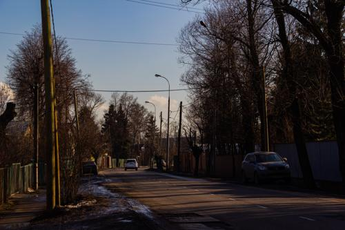 写真第19枚" title="コシノ→ヰヒノ：2020冬 -> 写真第19枚（クリックして完全版を見る）">


- 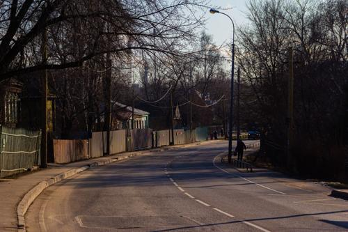 写真第25枚" title="コシノ→ヰヒノ：2020冬 -> 写真第25枚（クリックして完全版を見る）">


- 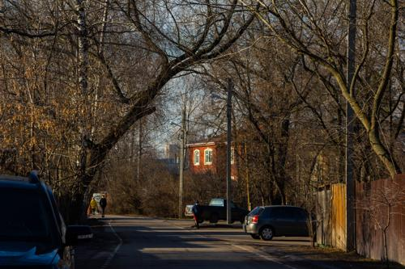 写真第28枚" title="コシノ→ヰヒノ：2020冬 -> 写真第28枚（クリックして完全版を見る）">


- 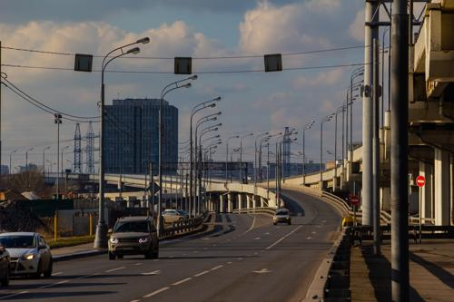 写真第31枚" title="コシノ→ヰヒノ：2020冬 -> 写真第31枚（クリックして完全版を見る）">


- 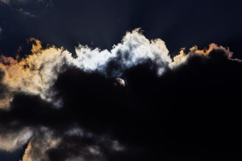 写真第41枚" title="コシノ→ヰヒノ：2020冬 -> 写真第41枚（クリックして完全版を見る）">


- 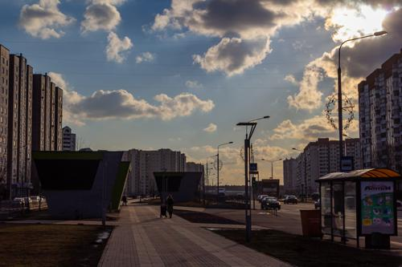 写真第44枚" title="コシノ→ヰヒノ：2020冬 -> 写真第44枚（クリックして完全版を見る）">


- 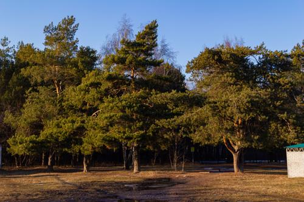 写真第63枚" title="コシノ→ヰヒノ：2020冬 -> 写真第63枚（クリックして完全版を見る）">


- 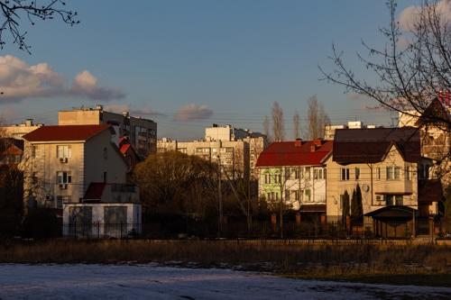 写真第67枚" title="コシノ→ヰヒノ：2020冬 -> 写真第67枚（クリックして完全版を見る）">


- 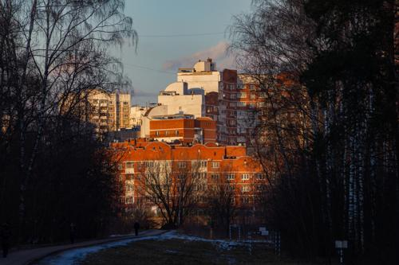 写真第71枚" title="コシノ→ヰヒノ：2020冬 -> 写真第71枚（クリックして完全版を見る）">


- 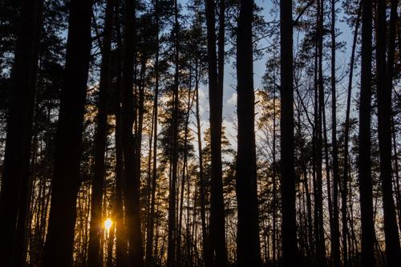 写真第76枚" title="コシノ→ヰヒノ：2020冬 -> 写真第76枚（クリックして完全版を見る）">

- 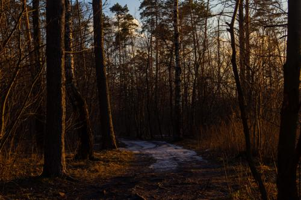 写真第78枚" title="コシノ→ヰヒノ：2020冬 -> 写真第78枚（クリックして完全版を見る）">


- 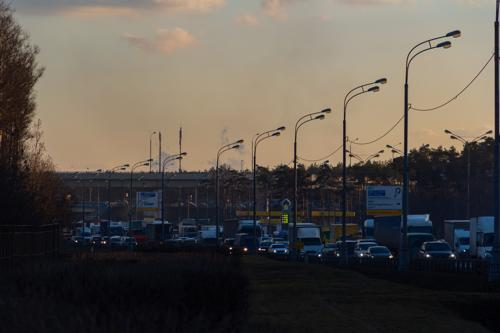 写真第83枚" title="コシノ→ヰヒノ：2020冬 -> 写真第83枚（クリックして完全版を見る）">

- 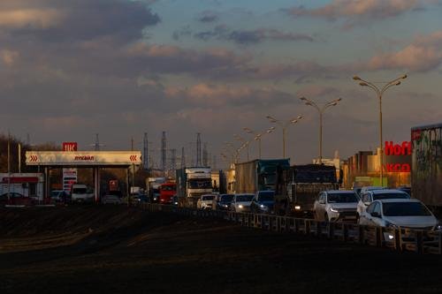 写真第85枚" title="コシノ→ヰヒノ：2020冬 -> 写真第85枚（クリックして完全版を見る）">
- 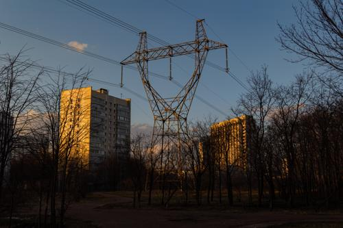 写真第86枚" title="コシノ→ヰヒノ：2020冬 -> 写真第86枚（クリックして完全版を見る）">